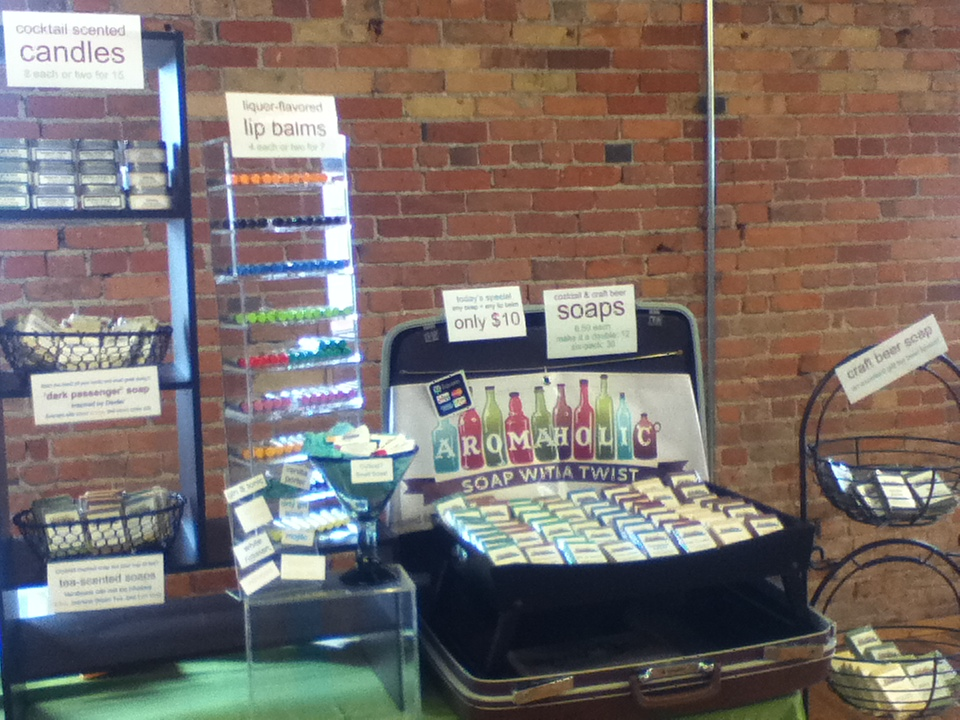
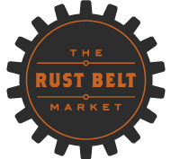
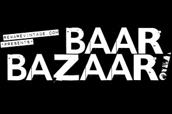
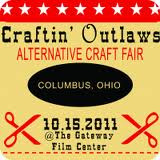
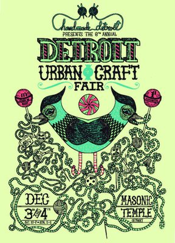
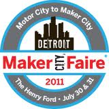
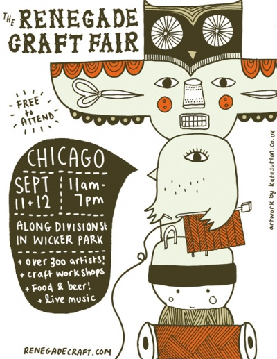
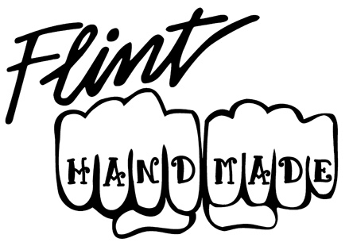

Hitting the craft circuit
Aromaholic is an enthusiastic supporter and participant in the indie craft scene. We've vended our handmade craft beer and mixed drink soaps, cocktail-flavored lip balms, and various other cocktail-scented body care products at lots of awesome shows in the Midwest. We love any chance to travel spreading the joys of aromaholism.
Check out our Facebook page for upcoming events.

Past Events
- May 11, 2013:
- Craft Circus, Ypsilanti, MI
- April 20, 2013:
- Makers Mart, Toledo, OH
- Dec 21-23, 2012:
- Rust Belt Market, Ferndale, MI
- Dec 8-9, 2012:
- DIYpsi, Ypsilanti, MI
- Dec 1-2, 2012:
- Detroit Urban Craft Fair, Detroit, MI
- Nov 24, 2012:
- Flint Handmade Holiday Craft Market, Flint, MI
- Nov 23-25, 2012:
- Rust Belt Market, Ferndale, MI
- Nov 17, 2012:
- Craftin' Outlaws, Columbus, OH
- Nov 17-18, 2012:
- Rust Belt Market, Ferndale, MI
- Nov 17, 2012:
- Maker's Mart, Toledo, OH
- Nov 10-11, 2012:
- Rust Belt Market, Ferndale, MI
- Weekends Nov-Dec 2011:
- Rust Belt Market, Ferndale, MI
- Nov 9, 2012:
- Smile with Style Benefit, Royal Oak, MI
- Nov 3, 2012:
- Craft Circus, Ypsilanti, MI
- October 27, 2012
- Liberty Local, Ann Arbor
- Weekends in October, 2012
- Rust Belt Market, Ferndale
- Sept 14-16, 2012
- DIY Street Fair, Ferndale
- July 28-29, 2012
- Handmade Detroit Craft Faire at Maker Faire, Dearborn
- July 28-29, 2012
- Handmade Detroit Craft Faire at Maker Faire, Dearborn
- July 14, 2012
- Flint Handmade at Buckham Alley Fest, Flint
- July 7, 2012
- Bazaar Bizarre at Larchmere Fest, Cleveland, OH
- Other weekends in June 2012
- Rust Belt Market, Ferndale
- June 8, 2012
- INDIEana Handicraft Exchange, Indianapolis, IN
- May 22 and June 2, 2012
- It Came From Planet B!, Mount Clemens
- May 5-6, 2012
- Metro Detroit Etsy Team at the TechShop Grand Opening, Dearborn
- April 28, 2012
- Craft Circus, Ypsilanti
- Weekends in February, 2012
- Rust Belt Market, Ferndale
- Dec 3 + 4, 2011:
- Detroit Urban Craft Fair, Detroit, MI
- Nov 26, 2011:
- Flint Handmade Holiday Craft Show, Flint, MI
- Oct 15, 2011:
- Craftin Outlaws, Columbus, OH
- Sept 17-18, 2011:
- Rust Belt Market, Ferndale (during DIY Street Fair)
- Sept 10-11, 2011:
- Renegade Craft Fair, Chicago
- Weekends in Aug:
- Rust Belt Market, Ferndale
- July 20 - 23, 2011:
- Ann Arbor Art Fair (inside Necto Nightclub), Ann Arbor
- July 16, 2011:
- Craft City at Buckham Alley Fest, Flint
- July 9 + 10, 2011:
- Rust Belt Market, Ferndale
- June 18, 2011:
- Rust Belt Market, Ferndale
- June 12, 2011:
- Rustbelt Market, Ferndale
- June 14, 2011:
- Ypsilanti's Downtown Farmers Market
- May 21, 2011:
- Art in the Park, Ypsilanti
- Nov 27, 2010:
- Flint Handmade Holiday Craft Market, Flint
- Dec 4 + 5th 2010:
- Detroit Urban Craft Fair, Detroit
- Dec 16 + 17, 2010:
- MittenMade Holiday Craft Fair, Ann Arbor






